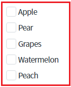
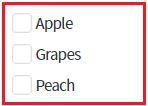
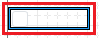
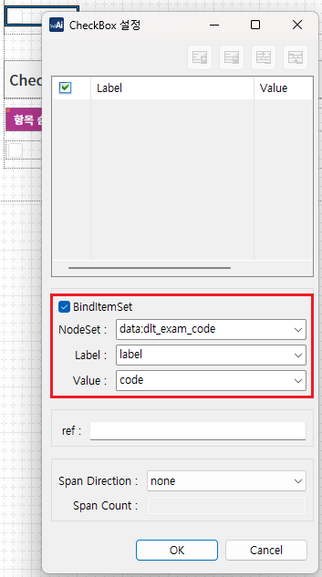

[Checkbox] 특정 항목 표시하지 않기
1개요
Checkbox의 항목을 조건에 따라 표시하지 않는 예제입니다.
2구현된 기능
기본(모든 목록이 보이는 상태)
출력된 목록 중 특정 항목을 숨기기 - 속성으로 설정
출력된 목록 중 특정 항목을 숨기기 - 스크립트로 설정
3예제 테스트 방법
설정별로 구성된 컴포넌트의 목록은 하나의 DataList와 연결되어있습니다. 설정에 따라 출력된 목록의 숨겨진 항목을 비교합니다.
3.1기본 상태
예제 영역 '모든 항목 표시'에 구성된 Checkbox를 확인합니다. 모든 항목이 표시된 상태입니다.Image 1.브라우저(Chrome) 실행 예시 - 모든 항목이 보이는 상태

3.2속성으로 숨기기 항목이 설정된 상태
예제 영역 '항목 숨김 지정'에 구성된 Checkbox를 확인합니다. 항목 'Pear', 'Watermelon'이 숨겨지고 'Apple', 'Grapes', 'Peach'이 표시된 상태입니다.Image 2.브라우저(Chrome) 실행 예시 - 특정 항목이 숨겨진 상태
3.3스크립트로 숨길 항목 설정하기
1
STEP 1: 초기 상태를 확인합니다.
예제 영역 '항목 숨김 지정 - 스크립트'에 구성된 Checkbox를 확인합니다. 모든 항목이 표시된 상태입니다.
Image 3.브라우저(Chrome) 실행 예시 - 기본 상태
2
STEP 2: '항목 숨기기' 버튼을 클릭합니다.
스크립트로 숨길 항목이 설정됩니다.
3
STEP 3: 실행된 결과를 확인합니다.
항목 'Pear', 'Watermelon'이 숨겨지고 'Apple', 'Grapes', 'Peach'이 표시됩니다.
Image 4.브라우저(Chrome) 실행 예시 - 실행 결과

4구현 예시
이 기능은 컴포넌의 목록이 DataList와 연결되어야 사용할 수 있는 기능입니다.
4.1DataList 정의하기
컴포넌트의 목록과 연결할 DataList를 정의합니다.
DataList를 생성하고 ID를 'dlt_exam_code'로 할당합니다.
필수로 정의될 컬럼은 3가지로 아래와 같습니다. 컬럼의 ID는 환경에 맞게 정의할 수 있습니다.label : 화면에 출력할 레이블
code : 화면에 출력할 레이블의 값
useYN : 항목의 표시 여부 조건의 값
('visibleColumn' 속성에 지정할 컬럼입니다. 이 컬럼의 값이 'visibleColumnFalseValue' 속성에 정의한 값과 동일한 경우 해당 항목은 숨겨집니다.)
Image 5.웹스퀘어 스튜디오 예시

생성한 DataList에서 사용할 데이터를 할당합니다. 예제에서는 화면이 로딩된 시점(scwin.onpageload)에 데이터를 할당하고 있습니다. 숨길 항목은 useYN 컬럼에 'N'으로 정의합니다.
Example 1.Script
scwin.onpageload = function() { //DataList dlt_exam_code에 데이터 할당 dlt_exam_code.setJSON([ {"label":"Apple","code":"01","useYN":"Y"}, {"label":"Pear","code":"02","useYN":"N"}, {"label":"Grapes","code":"03","useYN":"Y"}, {"label":"Watermelon","code":"04","useYN":"N"}, {"label":"Peach","code":"05","useYN":"Y"} ]); };
4.2컴포넌트의 목록과 DataList 연결하기
스튜디오의 디자인 탭에서 컴포넌트를 더블 클릭하여 목록과 DataList를 연결합니다. (아래의 이미지를 참고하여 설정합니다)
Image 6.웹스퀘어 스튜디오 디자인 탭 예시 - 컴포넌트 선택

Image 7.웹스퀘어 스튜디오 디자인 탭 예시 - 목록과 DataList 연결

4.3컴포넌트에 항목 숨기기 설정하기
속성으로 설정하기
컴포넌트의 속성을 정의합니다. 정의할 속성은 2가지로 아래와 같습니다.
visibleColumn="useYN" //DataList에 정의한 컬럼의 ID
visibleColumnFalseValue="N" //숨길 항목의 조건+ 값이 여러개인 경우 , 로 구분하여 정의합니다. 이 컬럼에 아무런 값을 정의하지 않은 경우 기본 값은 0, false, FALSE, F 입니다.
Image 8.웹스퀘어 스튜디오의 Component View 예시

Example 2.Source
<!-- Checkbox의 소스 본문 예시 --> <xf:select visibleColumn="useYN" visibleColumnFalseValue="N"> <!-- 중략 --> </xf:select>
스크립트로 설정하기
메소드 'setVisibleColumn'을 사용하여 설정합니다.
Example 3.Script
//컴포넌트 cbx_exam3의 숨길 항목의 컬럼과 조건값 설정 //항목 숨기기 컬럼 및 숨기기 값 설정 - 목록과 연결된 DataList의 "useYN" 컬럼의 값이 "N"인 경우 항목을 숨깁니다. cbx_exam3.setVisibleColumn("useYN", "N");
5주요 API
visibleColumn
visibleColumnFalseValue
setVisibleColumn( columnId , visibleColumnFalseValue )